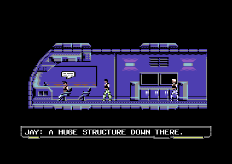
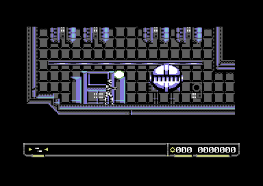

One more WIP update for Steel Ranger! This one is long, so brace yourself...
Getting the game content in initially complete state was by no means the end. There's always more work in testing, debugging, introducing new bugs and
re-fixing them than one might imagine!
The game has by now been examined by six testers. Apart from some loading problems in the beginning, they didn't see hard crashes; these were rare
in internal testing too. In that regard Steel Ranger's code appears "friendly", meaning that the basic code paths like moving, shooting,
receiving damage & destroying actors get exercised often and completely, and can't therefore likely contain hidden bugs.
An issue several of the testers mentioned is that sometimes the game loads in the middle of an area, although the data precaching mechanism tries
to eliminate this the best it can. At this point sprites are hidden to speed up loading, and to not require potentially risky waiting for a
sprite-free raster position due to the timed 2-bit fastloader protocol being used. So, if you encounter this, no need to worry, the game hasn't
crashed or locked up :)
Compared to Hessian, Steel Ranger's whole story is much easier to test. Almost all enemy encounters and plot elements are self-contained and can
be tested separately. Hessian had long alternative / branching "story arcs" that needed several playthroughs to test completely.
One somewhat hairy issue (similar to Hessian) is that the game continues to run while NPCs communicate with the player, with player controls
disabled. In rare cases there might be enemies on the screen as well, though the story tries its best to prevent this, by e.g. delaying radio
communications. To absolutely prevent the player from dying during NPC dialogue, player damage is turned off, and
the game also makes the enemies not hunt the player actively, to make it not so apparent.
But it turned out the game wasn't actually content complete when initially thought to be...
Adding the proper end credits quickly reduced the available disk space to 0 blocks free, as expected. However, the tone of the game's complete ending
left a bit to be desired. It wasn't feeling victorious enough, and dialogue between the NPCs was lacking. So, it was time to start figuring out ways to compress the ending code better so that a few more lines of dialogue could be included. Sometimes
this needed to go to rather esoteric lengths, e.g. reordering code or writing it a bit differently in hope that it results in a shorter Exomizer
compressed data stream!
Compressing just the ending code was not going to cut it, as it stubbornly remained too large. A critical victory was getting one of the enemy sprite
files (containing a stationary turret) to compress better: it was sitting slightly over the disk block 254 byte limit. The solution was ugly in an
artistic sense: let the shading of the turret's rotating part become incorrect as it flips from right to left. This made the sprites compress so
that they would fit inside the previous multiple of 254 bytes, freeing one block, and making it possible to get the improved ending in.
After this change, there was a hunger for more :) Doing a full playthrough requires performing an optional task, but the NPCs were not commenting on
it, rather just staying silent as if nothing had happened. Improving this needed two things: to compress the story script code related to the task
enough, so that setup code for making the NPCs react accordingly could be added without making it grow one block larger. Then, figure out a story
script code file where to put the actual additional dialogue in, again without making it spill over to the next block.
Finally, free space was found from a script code file used earlier in the story. This means that by examining memory at the game's beginning, you
can actually spoil some end-game dialogue, but that's the price the game has to pay for getting to include the additional story elements at all!
The tale of the improved ending / story does not quite end here.
The optional task code also deals with the player entering an area too early, and giving damage in that case. This effect activates or deactivates through entry / exit triggers placed in the world map. Mostly by luck, a rather serious bug
related to this was uncovered: if the player exited the area, then saved, then re-entered, the damage effect would stay on! This was because of the
exit trigger remaining "stuck" and not triggering again. Normally this would not have happened, but the game disables saving when the player is in serious
danger that could make the game uncontinuable, and saves manually (instead of automatic save on each room / area transition) once the danger is over.
The manual save caused the trigger to stay stuck.
Another fix, another code shortening. The game builds again... Except the player no longer receives the damage! The environmental damage only executes
on each odd-numbered frame to give a nice rhythm to the damage flashing & sound effect, but in this case it would be called more infrequently.
The last code optimization had caused the damage to be attempted on even-numbered frames instead, disabling it completely!
One last fix and optimization, which was extremely ugly: the damage timer value would also be used as an ID for a text resource that needs to be printed, to
not need an additional instruction which would make the code too large. The lesson to be learned here: when code is relying on conditions that are not
immediately obvious (the odd/even frame thing), document these conditions very clearly to not cause confusion later! And preferably, avoid the need
for such extreme late-stage optimizations.
A similar bug appeared with one of the bosses. It had code to prevent killing itself with explosives after the player is dead, but this code no longer
worked after the boss movement speed table had been reorganized. Again, a note warning against modification would have been necessary!
After these issues, the other tweaks and bugfixes were more straightforward, like editing some bad-looking parts in the game world, fixing places
where the player could get stuck on foot (needing the wheel mode to get out) and tweaking some of the boss health values slightly higher to make sure
the battles don't complete too fast with upgraded weapons.
Finally, some traditional postmortem analysis for the whole project.
Things that went right:
Inspiring story & scenario that did not need to change, and also informed the gameplay design
2x2 char blocks sped up physics / collision code and gave better resolution for world design
World editor tool that sped up & reduced the pain of creating the game world
Simpler controls compared to earlier games
All enemies are placed in world editor, so situations can be designed better and player isn't overwhelmed with constant enemy spawn
Boss fights that ended up all different yet challenging, and mostly exploit-free
Same memory management system for sprites, world data & loadable code: code relocation eliminated the need to split to fixed-size chunks
Things that could have been improved:
2x2 char blocks used much disk space just for the game world; the double-compression RLE scheme was absolutely necessary to get all content in
Decompression of the current area to a buffer (unavoidable due to the compressed format) reduces available memory
Engine could have been better designed for resident memory footprint reduction from the start (e.g. not storing all actor definitions initially)
NPC interaction code left to final stages ended up making spaghetti-like code compared to earlier games
Bugs introduced by size-optimizing already working code; not enough warnings in the source code to avoid this
Now all that remains is to test some more and hope for no new bugs / no new release candidate builds (now sitting at RC2), wait for Jason from Psytronik to
complete all the awesome packaging work, and then wait for the release itself.
Thanks for reading this series of WIP posts, hope you enjoy the game once it's out!
In the meanwhile, you can watch the trailer on YouTube:
And yeah, the Turrican fanfiction got completed too, and it turned out much less similar to Steel Ranger's story than originally expected.
Let's see if it appears somewhere someday...
9th November 2017:
Steel Ranger has reached content complete status roughly as planned, with the story implementation / scripting taking most of October,
and when November started, also the endings found their way in finally. It's now being tested, internally at first to make sure
nothing blows up!
The game will be published by Psytronik at a date that will be announced later; it's recommended
to watch their website as the release page should also go up there in the near future!
After finishing the endings, several bugs were found almost immediately, though they weren't anything complex to fix. E.g. an enemy
was left hanging in the midair due to level background changes without matching enemy repositioning, and some wrong messages were being
displayed at the ammo & upgrade terminals. Bugs that require engine resident code changes are trickier, since the code is followed by some page-aligned data
(sprite flipping tables) and now the engine code end is sitting almost exactly on a page boundary, meaning that if a bugfix requires the
code to grow, other parts of it should be size-optimized to compensate!
Overall, the Steel Ranger engine does its job well, and I'm satisfied with it (it's a few kilobytes smaller than Hessian's resident code + data)
but in retrospect it was not a good idea to leave the story related code last, e.g. support code for NPC conversations. It ended up a bit
uglier than the corresponding code in Hessian, though arguably also more powerful, as scripting sequences where characters alternate between
moving and talking ended up being straightforward to implement.
Disk side space is sitting at 2 blocks free, by using slightly illegal means of also using the directory track for file data.
The final publisher + end credits are likely to take the remaining free space.
You can watch the character creation, intro sequence & beginning gameplay on YouTube.
And the Turrican fanfiction hinted at the beginning of the WIP page is progressing here...

8th October 2017:
Boss enemies are all done! There are 8 boss fights in the game in total, including optional ones. Each of them also
has their own unique music, and these have been composed, so the game soundtrack is complete too, consisting of
26 songs in total. The uncompressed music data takes about 20 kilobytes, which goes down to 13 KB when compressed.
Boss fights are quite a bit of fun to create and test, as they should be challenging, yet survivable once you
learn the pattern or get into the rhythm. Furthermore, they should not be able to be completed via a simple exploit, for example standing
in some place where the boss can't do damage at all! However, coding them often results in hacky code, containing
hardcoded values for example for the boss enemy's movement boundaries. So it's kind of "write once and forget" code
which isn't very satisfying in a professional sense.
Some of the fights stress the sprite multiplexer and CPU time, which resulted in minor slowdowns, particularly in fights
where the player can turn to retreat in a scrolling room. When turning, the screen scrolls faster than normal to
show more of the world in the player's facing direction, and this results in more CPU time taken. Some code speed optimizations
were in order. For example: a "bomb" thrown by the boss enemy originally checked collisions against the whole damageable
actor list, like ordinary bullets do. However, in this case it's faster (and just as correct) to check just against the player actor.
Next begins the final leg of implementation, which means: texts + story events + friendly NPCs + intro + endings.
Diskspace remaining for that is at the moment 64 blocks, or a little less than 16 kilobytes! To fit everything in might require
some luck or creativity, it's interesting to see how it will go. The story potentially requires one more charset +
small level to be included, but it shouldn't take much space.
In the meanwhile, screenshots of the first bosses:

22nd September 2017:
Initial pass of filling the game world with enemies and items was completed roughly one week ago, and initial test runs (with combat)
through the whole became possible. But before starting the boss enemy work, some adjustments and optimizations were in order.
Since many of the enemies actively chase the player, using an unlimited health cheat and just running through the enemy hordes would create a
situation where all visible enemies would latch onto the player, leading to CPU & sprite multiplexer overload. Therefore now the enemies keep
track of whether they are the strongest (most hitpoints) chasing the player, and give up if they are not among the top 3. Many enemies also run a
routine each frame to see whether they can fire into a direction that has a chance of hitting the player. This could be optimized, resulting in
a nice CPU time gain per each enemy onscreen. Calling each actor's frame update routine also received a speedup by eliminating some no-longer-needed code.
In some levels, the dynamic memory allocation area would fill completely because several enemies' sprites and code reside in each loadable file, and also
some unused enemies would get loaded. It would be too wasteful of disk allocation units to store only one enemy per file. Therefore, these needed some minor
reorganization.
The game world got a few minor edits and added shortcuts. Also, during the world population phase, an extra level got in! Its purpose is
just to be very hard and optional, containing a large amount of parts for upgrade and ammo purchases.
The game engine was missing still a few features that will be necessary later. Now each level can run their own "player enters a room" code,
which can install for example a per-frame routine for further special events. Also, the familiar story state bit system ("plotbits") from MW4 &
Hessian got into Steel Ranger too.
Finally, the "nature" levels, where just various creature enemies attack the player, got a little more interesting simply by making the
stationary enemies like spike launchers be able to hurt the moving creatures! By timing the movement right, players can now utilize them
as weapons, and conserve ammo that way.
Now the boss enemy work can start for real! Diskspace is at 114 blocks free, and here's some shots with enemies:
4th September 2017:
Non-boss enemies completed! There are about 35 different types, which is slightly more than in Hessian. The largest of them use 5 sprites, while bosses should certainly use more.
Implementing the enemies revealed some weaknesses in the engine. They weren't critical but were still good to correct.
First, originally the game used different "actor types" for the same enemy having a different weapon, as the world data
doesn't store a "weapon number" separately for each placed enemy, like MW4 / Hessian do. This caused a lot more actor
types being reserved than the actual number of different enemies. Each actor type takes 4 bytes of resident engine data for the display & logic
data pointers so it's not insignificant. Furthermore there is a limit of max. 128 actor types for the whole game.
This was solved by the concept of "weapon sets", which means weapon assignment per enemy type. This can be chosen per room / area,
using the high nybble of one of the area background colors, so no extra data bytes were needed. There can be a max. of 16 weapon sets,
and the first (set 0) is the default which will always be applied first. If the enemy always uses the same weapon everywhere, it needs
only to be mentioned there.
Second, all the actor display (sprite frames) and logic (update routine address, hitpoints, score awarded from destruction, speed and firing
parameters etc.) definitions were initially resident in the main engine file. This was over 1.5 KB of data which ate into the dynamic allocation area.
The definitions are not needed when an actor does not appear in a level, so the logical solution was to move these too
alongside the loadable code which actually implements the actor update. This slows down and complicates accessing the actor definitions
just a bit, but was well worth it. Definitions for the "always needed" actors like player and bullets and explosions are still part of the
main engine file, and accessing them is faster.
In the beginning of August, all music except bossfight songs got composed too, so that front is looking good as well.
Next steps: populating the rest of the game world, creating the boss enemies and composing bossfight songs. If this completes within September,
then the game is well on its way. In that case October would be the story & NPC implementation month, just in time before NaNoWriMo 2017!
Free diskspace is sitting at 145 blocks. Considering that Steel Ranger won't be as text-heavy as Hessian, it doesn't seem critical;
however we'll know better once the boss enemies are in too.
3rd August 2017:
Enemy design and game world population is progressing; roughly one third of the world is populated now (optimistically speaking) and a little less than a half of the regular enemies are done. Boss encounters will be saved for later.
In addition, several other parts were already worked on too: the title screen, game start including player character customization, ingame menu including map/status/load/save, and upgrade + ammo + recharger stations in the game world.
Like in Hessian, defeated robotic enemies drop parts, which can be spent at the stations. The presence of enemies makes the game already very much playable; the difficulty they pose just needs to be tuned later. Armor power (= health)
recharges to a degree so that progressing should never be impossible even if you get into a bad situation, but collected power-ups or recharger stations are needed to fill the power to the maximum again.
Title music and first 3 ingame tunes have also been composed.
In the process, bugs were also uncovered and fixed, some of them a bit nasty, like corruption / crashes when the dynamic allocation memory area is full enough, or fastloader timing bugs related to the fast-save, and sprites. And some funnier, like
the player gaining total immunity from damage if crossing to a new room while in wheel form.
Disk side free blocks count is at 227 now; being cautiously optimistic it could be enough to finish the game without having to sacrifice anything major. In particular music is somewhat minimalistic (but still sets the proper combat atmosphere)
and doesn't take much diskspace.
One nice thing to do was to also update the diskimage creation utility, so that the files to write, and their order on the physical disk tracks, can be separately specified in the same "sequence" file. In addition, comments can be present in the
sequence file to mentally help with grouping the needed files for each part of the game. In an ideal situation the world data, charset, music and enemy sprites & code needed by a particular location could all be written sequentially to the disk
to minimize seek times. In practice several locations might use the same enemies, code or music, so the order will never be completely optimal.
Here's how the current title screen and main menu looks like:
2th July 2017:
There's a bit of time since the last work-in-progress update, but the 1st pass on the game world took this long. Now, however, it's done!
At the time of writing this, the game world consists of 661 screens spread over 17 "levels." There were 14 charsets originally, but one (a slightly boring tunnel / sewer set) got dropped out without much loss,
so the total number is 13 now.
While working on the game world, the loading and data compression system for it also needed work, and a few different versions were tested. Originally, the world editor just packed each room / area ("zone" in internal terminology)
the player can enter separately with Exomizer. This was good for compressing each individual area efficiently, but the compressor could not take advantage of repeating patterns across different areas of the same level. This
led to rather significant wasted disk space.
The final data storage mechanism consists of running each area first through a simple custom-written RLE algorithm. The purpose of the RLE compression is to reduce the amount of memory the level takes during runtime, and to allow
more of the last visited levels to be cached in memory to reduce repeated loading, if there's enough memory free. The RLE format is also written so that it should compress well with Exomizer (it uses the otherwise unused block number 255 to mark RLE runs.) Then,
to get the final data to be stored on disk, the concatenated RLE area datas of the level are run through Exomizer in one go. One final advantage of the RLE format is that it's faster to decompress than Exomizer data, so area changes are very fast now when the level
and charset are already in memory.
Originally, the hope was for free blocks count to be no less than 300 when the world would be done, but the world got a bit larger than planned, so the disk image is at 285 blocks free currently. What still needs to fit inside is
all the enemies + their code, characters, story scripts, music and intro / end sequences, we'll see if there will be need to compress further or drop something out.
The next step will be to start working on the enemies to actually bring the challenge in! In the meanwhile, here's some screens from the 1st pass:
6th April 2017:
The one-and-a-half month "coding break" after finishing the charsets has concluded, and it's time to begin creating the final game world layout!
Things that got implemented during this period:
Score panel update, including score, health bar, ammo bars and weapon inventory.
Fuel consumption for player special movement modes.
Ammo consumption and initial balancing for weapons.
Doubleclick to enter weapon inventory, plus doubleclick & longpress to enter pause menu, to allow playing with joystick only. This will be an option that can be switched off.
Picking up items.
Usable / animating objects in the game world, like switches and doors that open.
World editor support for placing items, enemies & game world objects.
Bullets cause damage.
Lift platforms that you can ride up & down.
Dynamically loadable code (including relocation according to the load address) for story scripting and enemy movement / AI.
Map display for the pause menu.
The last four items are of particular interest. MW4 and Hessian both load story & special case code in 2 KB chunks, but only one chunk can be in memory at a time. This limits flexibility and
causes longer loading breaks at times, since sometimes a complex story interaction might not fit inside a single chunk, on the other hand stuffing them as full as possible is preferable to eliminate wasted
disk space. But this time the code chunks can be any size, and several of them can be in memory at once, since they are handled with the same general dynamic memory allocation system as sprites
and level map data (first use in Hessian.) When free memory is exhausted, unused memory chunks are discarded based on which was least recently used.
The map display is somewhat familiar from other Metroid-style games, though due to charset and data structure limitations it doesn't show exits from one area to another. Implementing it required a bit of thinking:
normally the game engine knows only of the currently loaded "level" and the areas, objects and actors inside it. However the map should show the whole world without regard to level breaks. Therefore a minimal global data structure
of all areas in the game needs to be kept in memory. It's 3 bytes per area: X, Y and size (4 bits for horizontal and 4 for vertical), all expressed in screens. Furthermore,
a bit per area needs to be stored in the game state to allow showing only visited areas. Finally, a color can be defined for each level to differentiate between different sections of the world map.
The lift platforms seemed scary at first, but in the end implementing them was straightforward without much complication or slowdown to the normal case physics / movement / background collision code. The idea is simple: the physics
code doesn't know of the lift platforms at all. Instead the lift platform's update routine "catches" an actor (player, enemy, item) falling through it, and aligns it back on the platform. Then it sets a flag
on the actor, which tells the physics to disregard falling for one frame. As long as the actor stays on the platform, the flag gets refreshed on each successive frame. Switches or terminals can call a lift platform even
from several screens away, which is familiar from MW4. This just requires disabling the "remove offscreen actor" check for as long as the lift is moving.
Hessian and MW4 both suffered from errorprone code when handling bullet collision. The bullet actor's update routine would call the "apply damage" subroutine, which would destroy the target actor when out of health, by calling the
target's "death" routine. This is already several calls deep, and what registers and zeropage temporary variables to allow using in each routine, to avoid trashing the actor update loop when finally returning from the bullet update routine, was not always
clear. This time the bullet just adds its damage to the target actor's "damage accumulator" variable. It will be read as part of the target's update, so that applying the damage and potential destruction can be handled without nested calls.
Much safer!
Free diskspace is now slightly below 400 blocks, and the resident game code is about 15 KB. It will still grow a bit (e.g. loading / saving the game, and some general helper functions like multi-explosions or basic AI)
but is nothing compared to the over 20 KB in MW4 and Hessian, which had to include all standard enemy code in there because of the limited loadable code support.
Screenshots, not reflecting final content:
24th February 2017:
All game world charsets (14 total) have been drawn in their initial versions! Changes may be required later as the final game world layout is being composed, but for now it's looking good and it's time
to get back to coding.
The charsets are naturally informed by the story planned for the game, but it was interesting to take note how some of them mutated to something else while being drawn. Mostly, these were ideas that
felt like they could create good-looking art, or pay homage to other games, but did not actually work well or make sense within the story's internal logic, so they became something more utilitarian.
Not to worry, there will still be some more esoteric locations especially on the latter half of the game!
At this point it's good to get in the habit of watching the remaining diskspace. With all charsets, and about 90 screens worth of test layouts, there's now 423 blocks free on the diskside.
That's still a lot, but it could be estimated that expanding the game world to 500 screens would take about 160 blocks more away, which doesn't leave *that* much to all the enemies, music, story and intro / outro sequences.
In case of emergency the game could do the same as MW4: put the main part (with code) to the 1st diskside and all data to the 2nd, but it's preferable to keep it on one diskside if possible, for smoother experience and
to also simplify the loader code a bit.
The world editor has been a pleasure to work in, when not having to worry about individual chars any more. The typical example of a larger shape, a diagonal stairway or slope, becomes almost trivially easy to draw compared
to the old level editors. Whenever needed, new convenience editing features were easy to add (it's in C++ this time, not C like the old editors.) For example, sometimes you want to make a change in every shape using
a certain C64 charset char, without having to go through the individual shapes, sort of reverse to the principle of always composing the charset from the shapes. This is possible using an edit mode the editor
calls "locked edit", which stops the charset dynamic regeneration and allows to paint on the last generated charset, while reflecting the changes back to the affected shapes.
The editor is still missing functionality related to placing the game world interactable objects and items / enemies, so that will need to be added later.
Here's the last batch of ingame shots from this phase, as well as an editor screenshot showing a charset transition:
7th February 2017:
Game world charsets are progressing well. The initial pass for 7 full charsets is complete, which should be about halfway done.
While working on the charsets, some bugs were found (and fixed) from the game code, mostly related to movement & collision. There was also a rather serious memory overwrite bug in the loader, when not using fastloading, which
was very good to find at this point and not later!
Creating the charsets also involves writing animation code, for example waterfalls and flashing cursors on computer terminals. The animation code
shouldn't take more than a few rasterlines each frame, since it's run in the vertical blank, and if it takes too long, it could affect
scrolling negatively (color-RAM scrolling is time critical on NTSC.) When there are many separate char animations, and they
don't need to run on every frame, they can be interleaved on successive frames. For example, if there are two animations that should run
every fourth frame, the first could run on frames 1, 5, 9... and the second on frames 3, 7, 11.
The per-block way of handling background collision has been an unexpected bonus for creativity: it allows to reuse any char for other
background elements without having to think of the collision flags for that char. In Hessian and the MW games this was not possible,
as a unique copy of the char would have been needed.
Now to continue to the rest of the charsets, then it's on to coding the remaining functionality to get the interaction with the game world (collecting items, activating objects in the world, shooting enemies) fully operational.
Some more shots, including the human military spaceship (lower) which brought you to the machine planet, at the cost of some damage:
26th January 2017:
New year, and a new work-in-progress page!
Steel Ranger will be a Turrican / Metroid inspired action game, with adventure elements. It is a loose sequel to Hessian, with familiar gameplay but hopefully easier
controls this time.
The scenario is set a few hundred years from now. As humanity began to expand its reach through the space to seek a future beyond the dying Earth,
it found itself at war with the Throne Group's legacy: rebellious machines who also set their sights on conquering the galaxy, seeing themselves as
the next version of mankind, superior in every way to the fragile organic lifeforms. Using a Ranger armor suit, you must confront extreme combat
on the machines' home planet in hope of turning the tide of war.
After finishing Hessian, some time was needed to explore new tech options for a potential new C64 game. Now the exploration is over, and the choices for this game are clear.
In contrast to Hessian & Metal Warrior games, this game will utilize 2x2 char blocks to allow more precision and freedom in building the game world, as well as speeding up background
collision checks, since they are done on a per-block basis, without needing to drill down to the char level. Potential downside will be increased memory / disk use.
Like Hessian, Steel Ranger will run at 50Hz with color-per-char backgrounds, but the scrolling is freedirectional for a smoother feel, and faster scrolling when needed.
The aim is to be compatible with both PAL & NTSC, though on NTSC slowdown could occur more easily in heavy action sequences.
The game scenario needed some thinking as well. The original plan was a direct sequel to Hessian, picking up from where the story of the game left off, but
that got abandoned as stronger inspiration came from an unexpected direction: the idea to write Turrican fanfiction for NaNoWriMo 2017. This idea
mutated quickly into original fiction and something that felt very inspiring and suitable also for a game. Of course, considering how Turrican is one of the most "holy" games on the C64,
getting inspiration from it sets the bar for quality rather high!
Unlike Turrican, this game too will use sprite bullets instead of char bullets, to preserve the fidelity of the background at all times and allow for more colorful bullets.
This means that the firepower will not be as extreme in quantity, but using large and fast moving bullet sprites the weapons should yet feel fairly powerful. Firing happens
to 8 directions just like in Hessian.
Current status: player movement and weapons are done. Game world charsets and layout are in progress, using a new world editor tool which allows larger shapes (consisting of
several blocks if necessary) to be edited and inserted into the world. The C64 charset is dynamically constructed as editing proceeds, discarding duplicate chars and blocks. Due to
not needing to pixel human-occupied or otherwise realistic locations, the work feels more inspiring and less painful this time!